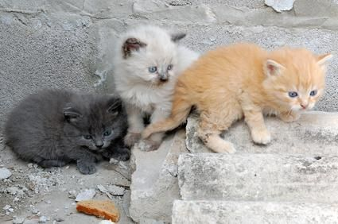

Proyecto 4 Garras (P4G) es una organización sin fines de lucro liderada por un grupo de voluntarios que buscan superar la situación de sobrepoblación, abandono, crueldad e indiferencia que viven millones de animales en nuestro país. (Buenos Aires/ Argentina). Propiciamos una actitud de respeto hacia todas las especies, entendiendo que no son “cosas” para ser utilizadas por el ser humano. Rechazamos todo tipo de explotación animal, incluyendo su uso como vestimenta, comida, entretenimiento y experimentación.
Algunas fotos de nuestros adoptaditos Ver fotos de adoptaditos
Nuestros objetivos:
Florencia Urchipia 2022. Multiplica BA 2.0